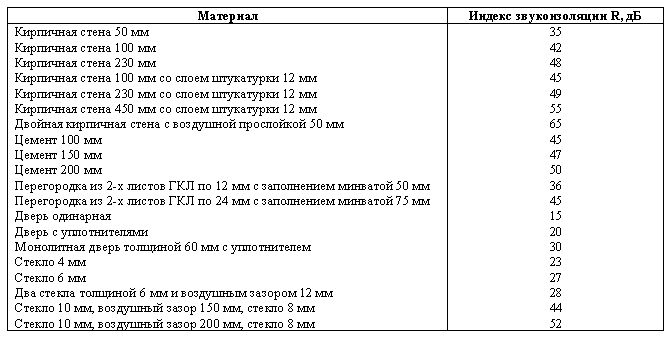
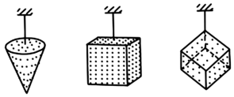

8.1 Акустические методы борьбы с шумом
Глушители
шума
применяются в основном для снижения шума различных аэродинамических установок и
устройств. В практике борьбы с шумом используют глушители различных конструкций.
Выбор типа глушителя зависит от конкретных условий работы каждой установки,
спектра шума и требуемой степени снижения уровня шума.
По принципу действия глушители подразделяются на абсорбционные, реактивные и комбинированные. Абсорбционные глушители, содержащие звукопоглощающий материал, поглощают энергию звуковых колебаний, а реактивные отражают звуковые волны обратно к источнику. В комбинированных глушителях происходит как поглощение, так и отражение звука.
Звукоизоляция – это способность ограждающей конструкции (перекрытия, перегородки, кожуха, корпуса машины и так далее) ослаблять проходящий через нее звук. Ослабление звуковых волн при прохождении через слой материала подробно рассматривалось в разделе 5.3. Суть использования звукоизоляции для снижения уровня шума заключается в том, что помещение, в котором находится человек, изолируется от более шумного помещения стеной, перегородкой, слоем плотного материала.
В таблице приведены значения индексов звукоизоляции различных конструкций:

Звукоизолирующий эффект обеспечивается также установкой экранов, колпаков, кожухов на наиболее шумящие узлы машин и механизмов.
Звукопоглощением называется комплекс явлений, связанных с потерями энергии звуковых волн при отражении от некоторых материалов и конструкций (звукопоглотителей). Принцип действия звукопоглотителей основан на превращении энергии акустических колебаний в тепловую энергию за счет явлений внутреннего трения и теплопроводности. Потери на трение наиболее значительны в пористых материалах, которые широко используются в звукопоглощающих облицовках и конструкциях. По коэффициенту звукопоглощения материалы и конструкции делятся на пять классов:
Звукопоглощающие
облицовки используют для так называемой акустической обработки помещений.
Акустическая обработка предусматривает покрытие звукопоглощающим материалом
потолка и верхней части стен. Вследствие этого снижается интенсивность
отраженных звуковых волн и уменьшается уровень звука в помещении (см. раздел 6).
Следует отметить, что акустическая обработка помещений дает заметный эффект в помещениях небольшого объема. В производственных помещениях кроме облицовки потолка и стен звукопоглощающими материалами используются звукопоглощающие экраны и так называемые штучные (объемные) звукопоглотители в виде шаров, конусов, кубов, которые размещаются непосредственно рядом с источниками шума.

Для поглощения узкополосных и тональных шумов, особенно в низкочастотной области спектра, используются так называемые резонансные звукопоглотители (см. раздел 8.3.1).
Интересным и принципиально новым методом снижения шума является метод активного глушения, связанный с созданием «антизвука», то есть равного по амплитуде и противоположного по фазе звука. В результате интерференции основного звука и «антизвука» в некоторых местах шумного помещения можно создать зоны тишины.
В
случаях, когда средства коллективной защиты и другие средства не обеспечивают
снижение шума до допустимых уровней, необходимо применять средства индивидуальной защиты.
Средства индивидуальной защиты весьма разнообразны: наушники, закрывающие ушную
раковину снаружи; противошумные вкладыши, перекрывающие наружный слуховой
проход; специальные защитные шлемы и каски, защищающие не только от воздушного
шума, но и от шума, который может распространяться по костям черепа. Для работы в особо шумных условиях
используют противошумные костюмы.
Средства индивидуальной защиты позволяют снизить уровень воспринимаемого звука на 10-40 дБ, причем наиболее значительное глушение шума наблюдается в области высоких частот, которые наиболее опасны для человека.